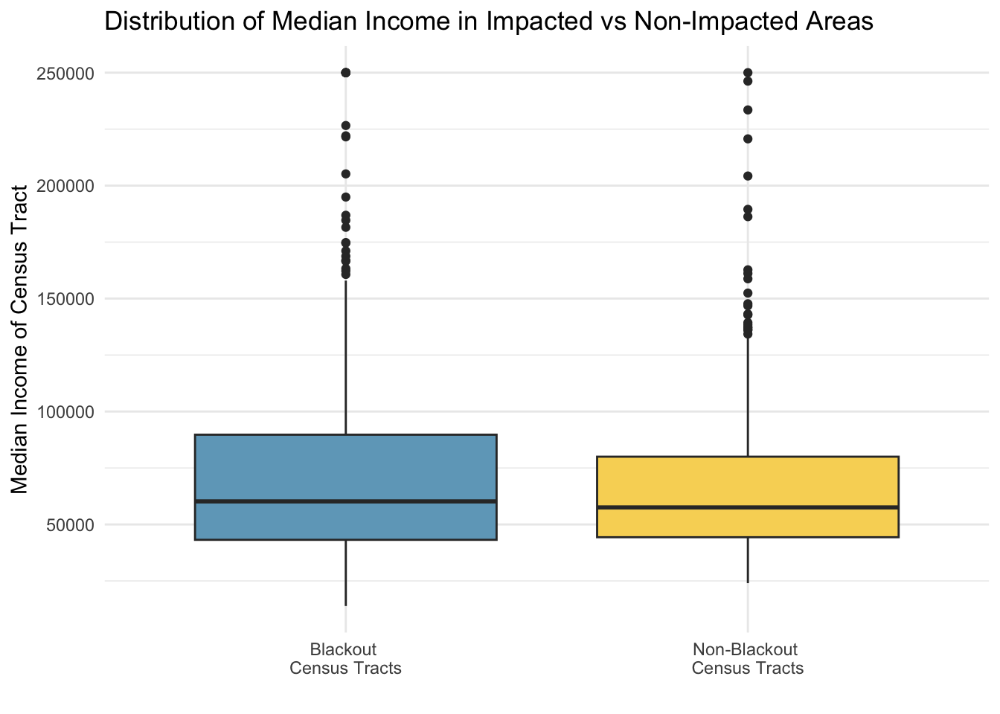

Investigating socioeconomic factors in the Houston metropolitan area in the aftermath of two winter storms in February, 2021.
Geospatial
Quarto
R
MEDS
Author
Luna Herschenfeld-Catalán
Published
December 5, 2023
Research Question
What socioeconomic factors are correlated with the occurrence of blackouts in Houston, Texas?
Project Background
In February 2021, Texas experienced multiple winter storms that led to power outages across the state and left over 4.5 million homes and businesses without power1. In light of this disaster, understanding the different factors that influence recovery is important to implement management strategies if this happens again. Exploring the socioeconomic factors of those that experienced blackouts is the first step to understanding paths to recovery.
Goals
Investigate socioeconomic factors associated with occurrence of blackouts in Houston, Texas metropolitan area.
Explore the socioeconomic factors that influenced recovery post blackouts in the Houston
Takeaways
There was no difference in the median income distribution of counties that experienced blackouts and those that did not experience blackouts.
More exploration of income distribution at a finer spatial resolution would be beneficial to understand any economic disparities in the preparedness for buildings to handle winter storms in Houston, Texas.
Data
Sources
LIGHT DATA
The VIIRS data is distributed in 10x10 degree tiles in sinusoidal equal-area projection. They are identified by horizontal (h) and vertical (v) position in the grid. Houston is included in two tiles: h08v05 and h08v06. We can access tiles through NASA’s Level-1 and Atmospheric Archive & Distribution System Distributed Active Archive Center (LAADS DAAC). Since we have two dates, we need to access these tiles on each day.
ROAD AND BUILDING DATA
Since highways account for a large amount of night lights, we want to exclude areas near highways to prevent falsely identifying areas with reduced traffic as areas without power. A shapefile with all of the highways in Texas was prepared by Geofabrik’s download sites, and we compiled a subset of roads that intersect the Houston metropolitan area in a Geopackage (.gpkg file). We prepared a GeoPackage with only houses in the Houston Metropolitan Area using building data from OpenStreetMap which was also provided by Geofabrik.
SOCIOECONOMIC DATA
We used the U.S. Census Bureau’s American Community Survey for census tracts in 2019 as a proxy for socioeconomic information at the county level. This data is stored in a folder: ACS_2019_5YR_TRACT_48.gdb which has layers that can be accessed using st_layers(). Each layer is a subset of the fields contained in ACS metadata.
Since the layers are separate, to access the ACS attributes associated with the geemetries you have to combine them into a single feature layer.
Analysis
The steps to this analysis:
Step 1: Where did blackouts occur in Houston?
Use the light data to determine which homes experienced a blackout. I combined the rasters using st_mosaic from the stars package to get a complete picture of the lights in Texas on the 7th, before the storm, and on the 16th, after the storms. Then I reclassified the lights so that any are with a change (aka a drop) of 200 nW cm^-2^sr^-1^ or more experienced a blackout. Since I am only interested in Houston, I cropped the blackout data to just the Houston Metropolitan Area, and removed the highways so that they wouldn’t interfere with the blackout data.
Reading in the light data:
Code
# read in night VNP46A1 # tile h08v05, collected on 2021-02-07houston_5_7 <-read_stars("/Users/lunacatalan/Documents/dev/lunacatalan.github.io/blog/2023-12-5-houston-blackouts/data/VNP46A1/VNP46A1.A2021038.h08v05.001.2021039064328.tif")# tile h08v06, collected on 2021-02-07houston_6_7 <-read_stars("/Users/lunacatalan/Documents/dev/lunacatalan.github.io/blog/2023-12-5-houston-blackouts/data/VNP46A1/VNP46A1.A2021038.h08v06.001.2021039064329.tif")# tile h08v05, collected on 2021-02-16houston_5_16 <-read_stars("/Users/lunacatalan/Documents/dev/lunacatalan.github.io/blog/2023-12-5-houston-blackouts/data/VNP46A1/VNP46A1.A2021047.h08v05.001.2021048091106.tif")# tile h08v06, collected on 2021-02-16houston_6_16 <-read_stars("/Users/lunacatalan/Documents/dev/lunacatalan.github.io/blog/2023-12-5-houston-blackouts/data/VNP46A1/VNP46A1.A2021047.h08v06.001.2021048091105.tif")# combined tiles for 2021 - 07h_7 <-st_mosaic(houston_5_7, houston_6_7)# combines tiles for 2021 - 16h_16 <-st_mosaic(houston_5_16, houston_6_16)
Calculating the change:
Code
# subtract the raster from the 16th from the 7th to determine the change between the two change <- h_7 - h_16# create reclassify object; cut at 200 to infinityrcl_change <-cut(change, c(200, Inf), # anything below infinity is NAlabels ='power_out')# vectorize mask to be able to use it with the other raster mask <-st_as_sf(rcl_change) %>%# vectorize blackout st_make_valid() # fix any invalid geometries
Selecting Houston:
Removing highways:
Code
plot(hwy_buffer)
These are the homes in Houston, excluding the homes that are within 200m of a highway.
Step 2: What homes experienced blackouts?
I wanted to find the homes that were impacted by blackouts in the Houston Metropolitan Area. I used the building data to identify the homes that experienced blackouts
Reading query `SELECT * FROM gis_osm_buildings_a_free_1 WHERE (type IS NULL AND name IS NULL)'
from data source `/Users/lunacatalan/Documents/dev/lunacatalan.github.io/blog/2023-12-5-houston-blackouts/data/gis_osm_buildings_a_free_1.gpkg'
using driver `GPKG'
Simple feature collection with 413297 features and 5 fields
Geometry type: MULTIPOLYGON
Dimension: XY
Bounding box: xmin: -96.50055 ymin: 29.00344 xmax: -94.53285 ymax: 30.50393
Geodetic CRS: WGS 84
Code
# when we use intersects if these geometry share any spacehomes_b_out <- buildings[hwy_buffer, , # use indexing: select the rows, all columns of buffer op = st_intersects, # choose option intersect select those that share any space drop =FALSE] # don't drop geometries
Step 3: What was the median income where blackouts occured?
I also wanted to investigate socioeconomic factors that could impact the recovery of these homes that experiences blackouts. To achieve this I joined the census data to understand the median income of those that experienced blackouts. I used the U.S. Census Bureau’s American Community Survey information to find county level data about the median income of homes in Houston that experienced blackouts. This could show a potential skew as to who is experiencing these events.
I want to be able to compare the incomes of census tracts that had homes that experienced a blackout, and those that did not.
Reading in Houston census data:
Code
# Join the geometry and median income layer togethermedian_inc_geom <-left_join(geom, median_income, by ="geoid") %>%st_transform(crs ="epsg:3083")h_box <- h_box %>%st_transform(crs ="epsg:3083")# crop census to Houstonh_median <-st_crop(median_inc_geom, h_box)# find where census tracts and the buildings share any spacebuilding_census <- h_median[homes_b_out, , # use indexing: select the rows, all columns of homes in blackout areas op = st_intersects]
Step 4: Visualizations of median income and blackouts
To understand the distribution of blackout areas, I created a map of median incomes in the Houston Metropolitan Area, and overlayed points to mark the census blocks that experienced a blackout.
Code
# plot it!median_income_plot
This is hard to understand if there is any distribution since the data is all collected in the center of the metropolitan area. Instead, plot the income distribution of census tracts that had blackouts and those that did not.
Distribution of Median Income
Compare areas that experienced blackouts and areas that did not to see if there is a socioeconomic difference between the two.
Code
# plot it!boxplot

Conclusions and Future Analysis
From the visualizations above, there was no difference in the median income distribution of counties that experienced blackouts and those that did not experience blackouts.
The map shows that census blocks affected by blackouts seem to congregate closer to the center of Houston’s metropolitan area. One issue with this analysis is that the distribution of census blocks is not uniform over the Houston area, so we can only say that it looks like more of the census tracts in the center of the metropolitan area were affected by blackouts, but the distribution of the blackouts extends outwards.
The box plot above shows that there is not a big difference in the median income distribution of census tracts that were affected by blackouts and those that were not affected. This distribution represents the aggregate of median income in each census tact which means that it is at a lower resolution than the blackout data. This has a potential to erase spatial patters within the census tracts that may represent a more accurate relationship between income and blackouts.
More exploration of income distribution at a finer spatial resolution would be beneficial to understand any economic disparities in the preparedness for buildings to handle winter storms in Houston, Texas.